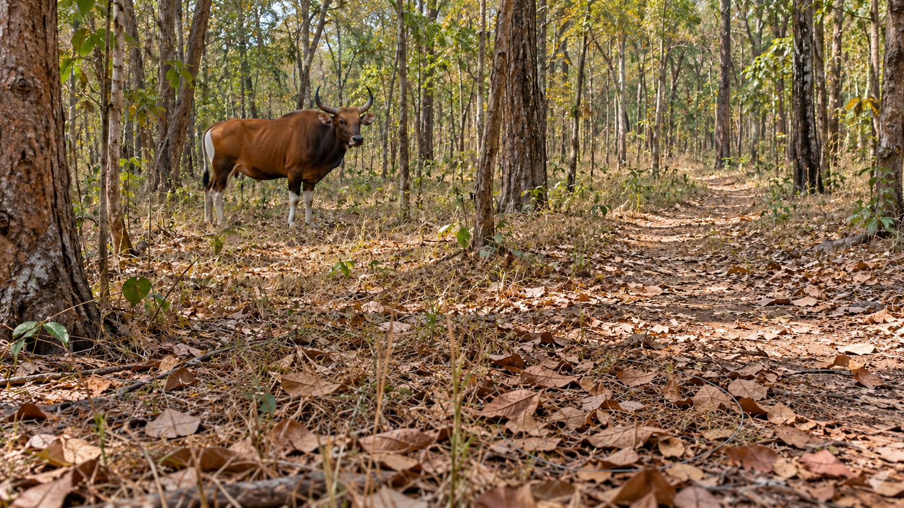

森林這麼大，
巡護員該先去哪裡？
森林裡的陷阱不容易看見。人力有限，巡護員得先決定去哪裡找。PAWS利用過去紀錄提供線索，規劃時也考慮預測有多大把握。
沒查獲的紀錄，該怎麼讀？
加入不確定性的扣分後，B的教學規劃分數較高，因此改選B。
路線與分數為教學示意，不是機率、陷阱數或作者模型輸出。
沒查獲，
不一定代表沒有。
資料裡的空白，需要連同巡護方式一起讀。模型估計的是給定巡護努力下的查獲可能性，不能直接當作陷阱真實存在率。
同樣寫著「沒查獲」，意思未必相同。
- 走過，而且查獲
- 能確認當時有盜獵跡象。
- 只巡過一小部分，沒查獲
- 其他位置可能還沒被查看。
- 巡得較仔細，仍沒查獲
- 紀錄較有參考價值，仍不保證看見所有隱蔽陷阱。
研究用巡護努力處理這種差別。預測風險之外，也保留模型對預測有多大把握。
未巡過的地方，不直接等於模型算出的高不確定區；這是兩種需要分開處理的問題。
先讀歷史紀錄
結合巡護努力、過去查獲與地形、道路等環境資料。
估計查獲可能性與預測把握
PAWS使用iWare-E處理負紀錄的可靠度，並以Gaussian process提供預測不確定性。
管理者與巡護員作判斷
規劃會考慮有限資源與預測把握；人員還要依道路可達性、保護區條件及現場情況選區、查找。
首頁的教學分數，怎麼算？
A原指標72、不確定性示例0.7；B原指標65、不確定性示例0.1。扣分權重設為0.5，依「原指標×（1−權重×不確定性）」得到A46.8、B61.75，顯示為47、62。
這是本文保守規劃方向的教學例，沒有執行作者模型，也不代表會自動前往最不確定的地方探索。
從森林查找，
看到路線為什麼改選。
130秒動畫，依序交代巡護紀錄、預測把握、教學路線與真正的試驗結果。沒有聲音。
不播放，直接閱讀
森林與隱蔽陷阱
先認識研究環境。動物、森林與鋼索為AI生成情境，不是實際觀察紀錄。
只走過部分森林
鋼索留在同一個位置，示意路徑從另一側走過。沒查獲不直接等於沒有。
從紀錄估計查獲可能性
結合巡護努力、查獲紀錄與環境資料。風險估計與預測把握分開看。
同樣資源，可能改選另一條路線
教學例中，A原指標較高，卻對B較有把握。加入不確定性扣分後，B的規劃分數較高。
回到真正的試驗
Srepok第一輪的高、中、低風險組，查獲跡象格數／實際巡過格數分別為14／42、5／40、0／36。
由人走進森林確認
風險分組提供查找線索。現場確認仍由巡護員完成，不能把查獲結果直接換算成挽救多少動物。
高風險選區，
較常查獲盜獵跡象。
這是柬埔寨Srepok Wildlife Sanctuary在2018年12月至2019年1月的第一輪結果。它檢查風險分組能否區分查獲情況。
真正的查獲結果
| 風險分組 | 查獲／巡過格數 | 巡護里程 |
|---|---|---|
| 高 | 14／42 | 103.8 km |
| 中 | 5／40 | 111.36 km |
| 低 | 0／36 | 84.12 km |
分子是查獲盜獵跡象的格數，分母是實際巡過的1×1公里格數。不是陷阱數，也不是每公里效率。
選定的區域，和分母有什麼不同？
每組先選5個3×3公里區塊，但人力有限，並未走遍全部位置。表格只計算實際巡過的1×1公里格網。
巡護員拿到區塊中心的GPS位置，事前不知道風險分組。圖上的風險顏色是給讀者看的，不能當作巡護員當時已取得的分組資訊。
高風險組較常查獲跡象；低風險組當次未查獲，仍不能證明沒有陷阱。
AI提供線索，現場仍需要人。
這次試驗中，不同風險組的查獲情況有差別。三組實際巡護里程並不相同，這張表還不能告訴我們，換用整套路線規劃後能多查獲多少；也不能換算成挽救動物數或族群恢復。
首頁等資源路線與分數是教學例；本頁表格是作者公布的現場結果，兩者分開呈現。
研究、數字與畫面來源
研究原文
Xu等（2019），Stay Ahead of Poachers: Illegal Wildlife Poaching Prediction and Patrol Planning Under Uncertainty with Field Test Evaluations。本頁依2019年11月6日的v3核對。
怎麼讀結果
Figure 11與Table III對應歷史試驗，不是2026年現行巡護配置。原文的30%屬規劃效用評估，不能稱為現場多查獲30%陷阱。
作者圖像權利由原權利人保留，未確認獨立CC圖片授權。沒有修改原圖資料或疊加教學路線。